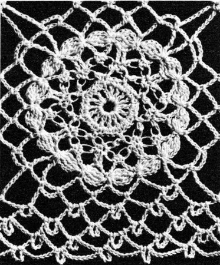

Valentine Tablecloth Pattern
MATERIALS:
J. & P. COATS "BIG BALL" BEST SIX CORD MERCERIZED CROCHET, Art. A. 104, Size 20: 28 balls of No. 1 White, No. 61 Ecru or No. 42 Cream for Small Cloth; 32 balls for Large Cloth;
or
CLARK'S "BIG BALL" MERCERIZED CROCHET, Art. B. 34, Size 20: 19 balls of No. 1 White, No. 61 Ecru
or
No. 42 Cream for Small Cloth; 22 balls for Large Cloth;
or
CLARK'S "BIG BALL" MERCERIZED CROCHET, Art. B. 345, Size 20: 13 balls of White or Ecru for Small Cloth; 14 balls for Large Cloth.
Milwards Steel Crochet Hook No. 9.
Motif measures 3 1/4 inches square Small Cloth measures 62 inches square, excluding border Large Cloth measures 62 x 81 inches, excluding border
FIRST MOTIF
Starting at center, ch 8. Join with sl st to form ring.
1st rnd: Ch 4, in ring make (dc, ch 1) 15 times. Join last ch 1 to 3rd ch of ch-4.
2nd rnd: Ch 1, sc in joining, sc in next sp, (sc in next dc, sc in next sp) 15 times. Join to first sc.
3rd rnd: Ch 1, sc in joining (draw loop on hook up to measure 1/4 inch, thread over and draw through loop on hook, insert hook between 1/4 inch loop and the single strand behind it and draw a loop through, thread over and draw through all loops on hook—knot st made—make another knot st, skip next 3 sc, sc in next sc) 7 times; make one knot st, then drawing up the loop of the hdc to measure 1/4 inch, make an hdc in first sc (long hdc made).
4th rnd: Ch 1, sc between double and single loops of hdc just made, * make 2 knot sts, (sc between loop and single strand of next knot st) twice. Repeat from * around, ending with sc in last knot st. Join to first sc.
5th rnd: Ch 8, * (sc between loop and single strand of next knot st) twice; ch 5, dc in next 2 sc, ch 5. Repeat from * around, ending with dc in last sc of 4th rnd. Join to 3rd ch of ch-8.
6th rnd: Sl st in next 2 ch, sc in loop, * ch 4, holding back on hook the last loop of each tr, make 3 tr in sc just made, thread over and draw through all loops on hook (cluster made); sc in next loop. Repeat from * around, ending with cluster. Join to first sc.
7th rnd: Ch 1, sc in joining, ch 7, sc in sc between next 2 clusters, * ch 7, in sc between next 2 clusters make dtr, ch 3 and dtr; (ch 7, sc in sc between next 2 clusters) 3 times. Repeat from * around, ending with ch 3, tr in first sc to form last loop.
8th rnd: Ch 1, sc in loop just formed, (ch 7, sc in next loop) twice; * ch 5, sc in next dtr, ch 15, sc in next dtr (corner loop), ch 5, sc in next loop, (ch 7, sc in next loop) 3 times. Repeat from * around. Join last ch 7 to first sc. Break off and fasten.
SECOND MOTIF:Work exactly as for First Motif until 7 rnds have been completed.
8th rnd: Ch 1, sc in loop, (ch 7, sc in next loop) twice; ch 5, sc in next dtr, ch 7; now join 2 motifs along one side as follows: sl st in any corner loop on First Motif, ch 7, sc in next d tr on Second Motif, ch 5, sc in next loop on Second Motif, (ch 3, sl st in next ch-7 loop on First Motif, ch 3, sc in next loop on Second Motif) 3 times; ch 5, sc in next dtr on Second Motif, ch 7, sl st in next corner loop on First Motif, ch 7, working on Second Motif only, sc in next d tr, ch 5, sc in next loop, (ch 7, sc in next loop) 3 times; starting at * on 8th rnd of First Motif, complete Second Motif exactly as for First Motif (no more joinings). Make 19 x 19 motifs for Small Cloth, or 19 x 25 motifs for Large Cloth, joining motifs as Second Motif was joined to First Motif (where cor-ners meet, join corners to previous joinings).
BORDER
1st rnd: Attach thread in last ch-7 loop before any corner, in same loop make sc, ch 5 and sc; ch 7, skip next ch-5 loop, ** in corner loop make (sc, ch 7) 3 times and sc (3 corner loops); ch 7, * skip next ch-5 loop, (in next loop make sc, ch 5, sc and ch 7) 3 times; skip next ch-5 loop, (in next loop make sc, ch 5, sc and ch 7) twice. Repeat from * across to within next corner loop ending with ch 7. Repeat from ** around ending with ch 3, tr in first sc.
2nd rnd: Ch 1, in loop just formed make sc, ch 5 and sc; ** (ch 7, in next ch-7 loop make sc, ch 5 and sc) 5 times; * ch 7, in next ch-7 loop make sc, ch 5 and sc. Repeat from * across to within last ch-7 loop before the 3 ch-7 corner loops. Repeat from ** around, ending as on 1st rnd.
3rd and 4th rnds: Ch 1, in loop make sc, ch 5 and sc; * ch 7, in next ch-7 loop make sc, ch 5 and sc. Repeat from * around, ending as on first rnd. Break off and fasten. Starch lightly and press.

HOME